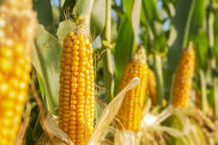

"... a cidade à transforma!"
A cidade recebe os produtos vindos do campo e posteriormente os transforma, sendo consumidos por
todas as pessoas, desde o campo à cidade.
Podemos citar como exemplos de principais matérias-primas que são transformadas:
ARROZ:
- O arroz é uma planta que alimenta mais de metade da população humana do mundo.
- Área plantada: 1.480,5 mil hectares.
- Produção: 10.033,6 mil toneladas.
- Consumo interno: 10.250 mil toneladas.
- Exportações: 1.700 mil toneladas.
- Estado de maior produção: Rio Grande do Sul.
FEIJÃO:
- O feijão proporciona nutrientes essenciais como proteínas, ferro, cálcio, vitaminas, carboidratos e fibras.
- Área plantada: 2.695,2 mil hectares.
- Produção: 3.068,2 mil toneladas.
- Consumo interno: 2.850 mil toneladas.
- Exportações: 150 mil toneladas.
- Estado de maior produção: Paraná.

MILHO:
- O milho é um cereal cultivado em grande parte do mundo e extensivamente utilizado como alimento humano ou para ração animal devido às suas qualidades nutricionais.
- Área plantada: 22.196 mil hectares.
- Produção: 129.961,6 mil toneladas.
- Consumo interno: 79.433 mil toneladas.
- Exportações: 50.000 mil toneladas.
- Estado de maior produção: Mato Grosso.
SOJA:
- A soja é um dos principais grãos produzidos no mundo, servindo de alimentto para pessoas e animais.
- Área plantada: 44.072,9 mil hectares.
- Produção: 154.603,4 mil toneladas.
- Consumo interno: 56.734,1 mil toneladas.
- Exportações: 95.640 mil toneladas.
- Estado de maior produção: Mato Grosso.
TRIGO:
- O trigo é a segunda maior cultura de cereais.Usada tanto para alimentação humana e na alimentação dos animais
- Área plantada: 3.431,4 mil hectares.
- Produção: 10.409,5 mil toneladas.
- Consumo interno: 12.438,2 mil toneladas.
- Exportações: 2.600 mil toneladas.
- Estado de maior produção: Paraná.